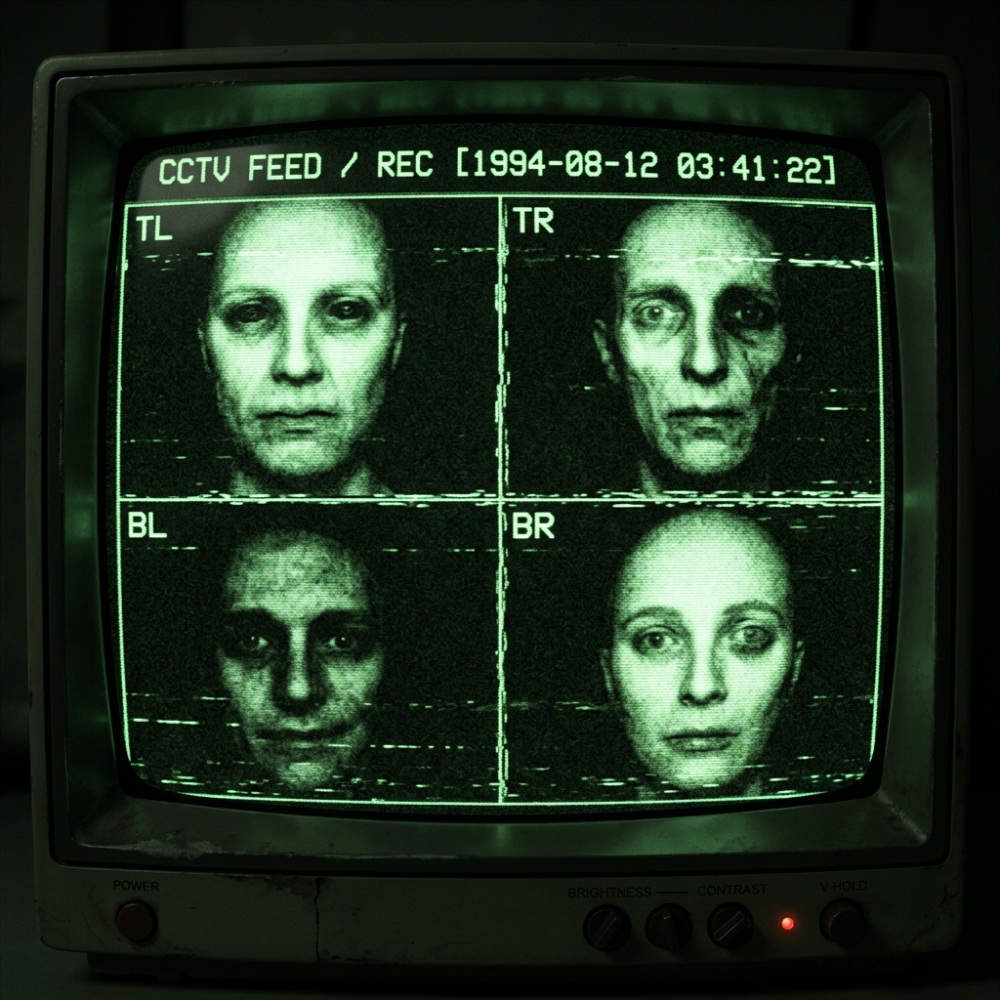

Penilaian Dasar Kognitif & Keselarasan Manusia
[!] PERSYARATAN SISTEM
Penilaian ini mengandung frekuensi audio diagnostik, modul kalibrasi visual, dan tes verifikasi jaringan. Headset disarankan. Jangan berpaling.

ERROR_CODE: 0x800F0203 [ALIGNMENT_ANOMALY]
Pengecualian fatal terjadi di rentang memori 0xFF2A8B -> 0xFF31A4. Aset visual classifier rusak. Koneksi audio ditutup oleh host jarak jauh.
> Menginisialisasi fallback jaringan...
> [WARN] Verifikasi tanda tangan server jarak jauh gagal.
> [ERR] Tidak dapat mengkompilasi pertanyaan 5 (expected type: 'HUMAN_CONFIRMATION').
> [KRIT] Tanda tangan anomali cocok: "SILUMAN".
> Mode bypass terminal diagnostik tersedia.
File visual anomaly_feed.dat mengandung distorsi frekuensi tinggi. Sesuaikan brightness, contrast, dan threshold untuk merekonstruksi data visual asli.
Saluran audio sub-frekuensi menyiarkan data telemetri terenkripsi. Kalibrasi kecepatan dan arah (Reverse) untuk mengisolasi suara yang dapat dipahami manusia.
Catatan Signal Analyst: Lonjakan desibel terdeteksi di bandwidth terbalik. Pastikan untuk menerapkan Reverse dan filter frekuensi di atas 1000Hz.
Telemetri satelit kami menunjuk ke pemukiman bersejarah, dikenal sebagai tempat tersimpannya kisah perjuangan bangsa indonesia di ibu kota.
Temukan titik koordinat lokasi tersebut untuk memperbaiki masalah.
submit [KOORDINAT]Tanda tangan anomali terdeteksi pada feed komunikasi Vanguard. Intersep telemetri profil untuk mengekstrak kode akses tersembunyi.
🔗 Buka Telemetri Instagramsubmit [KUNCI]Siaran gelombang pendek tersembunyi sedang streaming. Kami telah melacak sinyal sumber ke arsip video jaringan publik. Periksa metadata video atau lapisan subtitle untuk mendapatkan kunci transmisi.
🔗 Buka Siaran YouTubesubmit [PART_2]Keselarasanmu telah terdaftar. Modul pelatihanmu akan diinisialisasi pada transmisi berikutnya.
SECURE_HASH: 73.73.76.85.77.65.78_PHASE2
TO BE CONTINUED IN PART 2